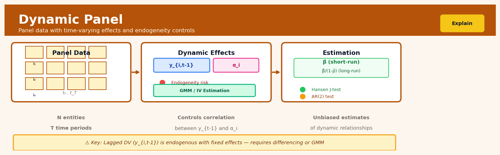

Dynamic Panel#


The most common mistake with dynamic panels is treating the lagged dependent variable like any other regressor and throwing it into a fixed effects model. That creates Nickell bias because your lagged outcome is mechanically correlated with the error term through the individual effects. You need differencing combined with GMM estimators like Arellano-Bond or system GMM to get consistent estimates, especially when your time dimension is short relative to cross-sectional units.
The 60-Second Version#
What it does: Dynamic Panel estimates how past performance influences current outcomes while accounting for hidden factors that stay constant within each entity (like company culture or regional effects).
When to use it: You’re analyzing repeated measurements of the same entities over time—countries, companies, customers—and you believe yesterday’s outcome affects today’s, but each entity has unmeasured characteristics that create bias.
What you get back: Quantified estimates of how much the past drives the present, plus the impact of other factors you can change, letting you distinguish genuine momentum from selection effects.
Difficulty |
Advanced |
Typical runtime |
Minutes on 100K rows |
What you bring |
Panel data: multiple time periods for the same entities, plus the outcome’s lagged values and other predictors |
What you get |
Causal effect estimates separating true dynamics from entity-specific confounding |
Heuristix bucket |
Explain — Causal Analysis & Interpretation |
Dynamic Panel fails silently when you have too few time periods—you need at least three, preferably five or more, for reliable inference.
Learning Objectives#
After reading this chapter, a business user will be able to:
Identify business scenarios where past performance drives current outcomes—such as customer retention, revenue momentum, or habit formation—where Dynamic Panel methods are essential for accurate causal estimates.
Interpret coefficient estimates from Dynamic Panel models to distinguish between short-term immediate effects and long-term cumulative impacts of interventions on business KPIs.
Decide whether an observed business change represents genuine causal impact or merely persistence from historical trends, enabling more informed resource allocation and strategy decisions.
After reading this chapter, a data scientist will be able to:
Implement Arellano-Bond difference GMM and Blundell-Bond system GMM estimators, selecting appropriate lag structures and instrument sets based on data characteristics and theoretical considerations.
Configure the number of lags used as instruments and choose between one-step and two-step estimators by evaluating the bias-efficiency trade-off given sample size and panel structure.
Validate Dynamic Panel results using the Sargan-Hansen test for instrument validity and the Arellano-Bond test for serial correlation, and diagnose instrument proliferation or weak instrument problems before drawing conclusions.
Overview#
Dynamic Panel is an econometric estimation technique for causal inference with panel data where the outcome variable’s past values directly influence its current value. The method addresses the fundamental endogeneity problem that arises when a lagged dependent variable appears as a regressor alongside unobserved individual-specific effects, rendering standard fixed effects and random effects estimators inconsistent. Dynamic Panel belongs to the family of Generalised Method of Moments (GMM) estimators, with the Arellano-Bond (1991) difference GMM and Blundell-Bond (1998) system GMM being the most widely implemented variants.
When to Use This#
Use this when you have panel data where outcomes exhibit persistence over time—for example, analysing how a firm’s current profitability depends on its past profitability while controlling for time-invariant firm characteristics.
Use this when you suspect that the causal effect of a treatment or policy unfolds gradually, and you need to model the adjustment dynamics explicitly rather than assuming instantaneous equilibrium.
Use this when you have “short T, large N” panel data (many cross-sectional units observed over relatively few time periods) and need consistent estimation of autoregressive parameters.
Use this when standard fixed effects estimation would yield biased coefficients due to the mechanical correlation between the lagged dependent variable and the transformed error term.
Use this when you have potentially endogenous regressors beyond the lagged dependent variable and need instrumental variables that arise naturally from the panel structure.
Use this when you want to decompose the total effect of a treatment into its short-run impact and long-run equilibrium effect through the persistence parameter.
Do NOT use this when your panel has very few cross-sectional units (N < 50)—the asymptotic properties rely on N → ∞, and finite-sample bias becomes severe with small N.
Do NOT use this when your time dimension T is large relative to N—in this case, standard fixed effects bias diminishes and simpler estimators become preferable.
Do NOT use this when your instruments are weak, which occurs when the autoregressive parameter is close to unity or when the variance of individual effects dominates the variance of idiosyncratic errors.
Do NOT use this when you have no theoretical justification for dynamics—adding a lagged dependent variable “to control for history” without understanding the data-generating process can obscure rather than reveal causal mechanisms.
Questions This Answers#
Understanding Momentum and Persistence#
Is our customer retention rate improving because of our new initiatives, or are we just seeing customers who were already loyal staying loyal?
Why do high-performing salespeople consistently outperform — is it their skill, or does success itself create more success?
When our market share drops 3% one quarter, how much of next quarter’s performance is driven by that decline versus our recovery efforts?
Are regions with high growth continuing to grow because of inherent market conditions or because previous growth attracts more investment?
If a store underperforms for two consecutive quarters, does that momentum make it harder to recover even after we intervene?
Separating Real Effects from Inertia#
Did our Q3 marketing campaign actually drive the 12% revenue increase, or would sales have grown anyway based on our Q2 trajectory?
When we roll out training programs to underperforming teams, how do we know the improvement isn’t just regression to the mean?
Is our employee engagement score improving because of our culture initiatives, or do engaged employees just stay engaged regardless of what we do?
After acquiring a competitor, how much of the revenue synergy is real versus just the natural momentum of both businesses?
Making Better Investment Decisions#
Should we invest more in markets showing recent growth, or are those gains just temporary momentum that will fade?
Which product lines should we fund — the ones with strong recent performance or the ones where our interventions actually moved the needle?
If we stop investing in customer retention programs, how quickly would our churn rate deteriorate beyond its natural baseline?
When deciding between two regions for expansion, how do we account for the fact that one region’s recent success might just be riding previous momentum?
How It Works#
Imagine you’re trying to measure whether hiring more salespeople actually increases a company’s revenue. The problem is that successful companies (which already have high revenue) tend to hire more people, while struggling companies hire fewer. But there’s another twist: this year’s revenue directly depends on last year’s revenue because of client relationships, market momentum, and brand recognition. It’s like trying to figure out if fertilizer helps a garden grow when you know that gardens that grew well last season are more likely to get fertilized this season, and last season’s growth directly causes this season’s growth through healthy soil and established roots. You need a method that can separate the “momentum effect” from the “fertilizer effect” while accounting for each garden’s inherent quality.
BEFORE: Panel Data with Lagged Outcome Problem
Time →
Company t=1 t=2 t=3 t=4
A 100 ─→ 120 ─→ 135 ─→ 150 (Past revenue affects current)
B 80 ─→ 85 ─→ 90 ─→ 95
C 110 ─→ 130 ─→ 145 ─→ 160
↑ ↑ ↑ ↑
Unobserved company quality (brand, culture)
creates correlation!
DYNAMIC PANEL TRANSFORMATION:
┌─────────────────────────────────────────┐
│ Step 1: Take first differences │
│ Δ Revenue = Revenue(t) - Revenue(t-1)│
│ ↓ │
│ Removes fixed company effects! │
└─────────────────────────────────────────┘
↓
┌─────────────────────────────────────────┐
│ Step 2: Use deeper lags as instruments │
│ Revenue(t-2) predicts Revenue(t-1) │
│ but NOT correlated with error(t)! │
└─────────────────────────────────────────┘
AFTER: Clean causal estimates that account for
momentum AND unobserved quality
First, the method takes differences over time for each unit. Instead of looking at Company A’s revenue level in year three, it looks at how much revenue changed from year two to year three. This clever transformation automatically eliminates any fixed characteristics of the company (like brand strength or management quality) that don’t change over time. Those unchanging factors disappear when you subtract one year from the next.
Next, it confronts the remaining endogeneity problem. Even after differencing, there’s still a problem: last year’s revenue appears on both sides of your equation—it’s used to predict this year’s revenue, but it’s also part of the calculation for the change you’re trying to explain. This creates a circular reasoning problem that biases traditional estimates.
Then, the method reaches further back in time for clean predictors. It uses revenue from two or more years ago as an “instrument”—a tool to predict last year’s revenue without being contaminated by this year’s random shocks. Revenue from two years ago strongly predicts last year’s revenue (because of momentum), but it has no direct connection to unexpected events happening this year.
The algorithm tests whether these historical values are valid instruments. It checks whether older lags truly predict the problematic variables without being correlated with current errors. This validation ensures the instruments satisfy the necessary conditions for identifying causal effects.
Finally, it combines multiple time periods and instruments to estimate causal effects. By using information from many years and many companies simultaneously, the method produces estimates of how much each factor (like hiring salespeople) truly causes changes in the outcome, cleanly separated from momentum effects and unobserved quality.
The key insight: By differencing away fixed characteristics and using the deep past to predict the recent past, Dynamic Panel breaks the circular logic that makes momentum-driven outcomes seemingly impossible to analyze causally.
The Intuition#
Consider a marketing analyst trying to understand how advertising expenditure affects brand awareness. The challenge is that brand awareness today depends heavily on brand awareness yesterday—consumers don’t forget overnight, and brand equity accumulates. If we simply regress current awareness on current advertising spend, we conflate the direct effect of this period’s advertising with the carryover effect of past awareness (which was itself built by past advertising). To isolate the true causal effect of advertising, we need a model that explicitly accounts for this temporal persistence.
The core problem with standard approaches becomes clear when we think about what fixed effects estimation actually does. Fixed effects removes time-invariant individual characteristics by demeaning the data or taking first differences. But here’s the rub: when we first-difference a dynamic model, the differenced lagged dependent variable \((y_{i,t-1} - y_{i,t-2})\) is mechanically correlated with the differenced error term \((\varepsilon_{it} - \varepsilon_{i,t-1})\) because \(y_{i,t-1}\) depends on \(\varepsilon_{i,t-1}\). This correlation doesn’t vanish as the sample grows—fixed effects is inconsistent, not merely inefficient.
The elegant solution exploits the panel structure itself. While \(y_{i,t-1}\) is correlated with \(\varepsilon_{i,t-1}\), earlier values like \(y_{i,t-2}\) are not—they were determined before \(\varepsilon_{i,t-1}\) was realised, assuming errors are serially uncorrelated. These earlier values are correlated with the endogenous regressor (past awareness predicts recent awareness) but uncorrelated with the current error (past awareness doesn’t cause today’s unobserved shock). This is precisely the definition of a valid instrument. The panel structure generates these instruments automatically: the past provides instruments for the present. As we observe more time periods, more instruments become available, though using too many creates its own problems, as we shall see.
The Mathematics#
Model Specification#
Consider a dynamic panel data model with \(N\) cross-sectional units observed over \(T\) time periods:
where:
\(y_{it}\) is the outcome for unit \(i\) at time \(t\)
\(y_{i,t-1}\) is the lagged dependent variable with autoregressive parameter \(|\gamma| < 1\)
\(\mathbf{x}_{it}\) is a \(k \times 1\) vector of explanatory variables
\(\boldsymbol{\beta}\) is the corresponding coefficient vector
\(\eta_i\) is the unobserved time-invariant individual effect
\(\varepsilon_{it}\) is the idiosyncratic error term
Assumptions#
Assumption 1 (Sequential Exogeneity):
This permits contemporaneous correlation between \(\mathbf{x}_{it}\) and \(\eta_i\) but requires that current errors are uncorrelated with current and past values of all variables.
Assumption 2 (No Serial Correlation):
The idiosyncratic errors are serially uncorrelated. First-order serial correlation can be accommodated by using deeper lags as instruments.
Assumption 3 (Initial Conditions):
The initial observation \(y_{i0}\) is predetermined with respect to subsequent errors.
The Nickell Bias Problem#
To see why fixed effects fails, consider the within transformation. Define \(\bar{y}_i = T^{-1}\sum_{t=1}^T y_{it}\) and transform:
The correlation between \((y_{i,t-1} - \bar{y}_{i,-1})\) and \((\varepsilon_{it} - \bar{\varepsilon}_i)\) is:
This “Nickell bias” is negative and of order \(O(T^{-1})\). For typical panels with \(T\) between 5 and 15, the bias can be substantial—often 20-50% of the true parameter value.
Arellano-Bond Difference GMM#
First-differencing eliminates the individual effect:
where \(\Delta y_{it} = y_{it} - y_{i,t-1}\).
Under Assumption 2, we have the moment conditions:
These generate \((T-2)(T-1)/2\) moment conditions. Define the instrument matrix for unit \(i\):
The GMM estimator minimises:
where \(\boldsymbol{\theta} = (\gamma, \boldsymbol{\beta}')'\) and \(\mathbf{W}_N\) is a weighting matrix.
One-step estimator: Uses \(\mathbf{W}_N = \left(\sum_{i=1}^N \mathbf{Z}_i' \mathbf{H} \mathbf{Z}_i\right)^{-1}\) where \(\mathbf{H}\) is a \((T-2) \times (T-2)\) matrix with 2 on the diagonal, -1 on the first off-diagonals, and 0 elsewhere.
Two-step estimator: Uses residuals from the one-step estimator to construct:
The two-step estimator is asymptotically efficient but can have severely downward-biased standard errors in finite samples.
Blundell-Bond System GMM#
When \(\gamma\) is close to unity or the variance of \(\eta_i\) is large relative to \(\sigma^2_\varepsilon\), the instruments in difference GMM become weak. Blundell and Bond (1998) augment the difference equations with level equations:
Under the additional assumption:
lagged differences become valid instruments for the levels equation:
The system GMM stacks the difference and level equations, using:
Lagged levels as instruments for the difference equations
Lagged differences as instruments for the level equations
Specification Tests#
Arellano-Bond test for serial correlation:
Under the null of no serial correlation in \(\varepsilon_{it}\), we expect AR(1) in \(\Delta\varepsilon_{it}\) but no AR(2). The test statistic:
Hansen/Sargan test of overidentifying restrictions:
where \(q\) is the number of instruments and \(k\) is the number of parameters.
Long-Run Effects#
The long-run effect of a permanent unit change in \(x_j\) is:
where \(y^*\) is the steady-state value. The standard error is computed via the delta method.
Understanding the Mathematics#
The Dynamic Panel Model#
The equation:
Read it aloud:
“The outcome for individual i at time t equals a coefficient times that same individual’s outcome in the previous period, plus a coefficient times their current predictor value, plus a fixed individual-specific effect, plus random noise.”
What each symbol means:
\(y_{it}\) = the outcome variable for company i in year t (e.g., revenue)
\(\alpha\) = how much last period’s outcome affects this period (the persistence coefficient)
\(y_{it-1}\) = the same company’s outcome last year (the lagged dependent variable)
\(\beta\) = how much the predictor affects the outcome
\(x_{it}\) = the predictor variable (e.g., advertising spend)
\(\mu_i\) = the company’s unchanging characteristics (management quality, brand strength)
\(\varepsilon_{it}\) = random unpredictable shocks this year
A concrete numerical example:
Suppose we’re modeling company revenue in millions. Last year’s revenue was \(50M. This year's advertising spend is \)5M. The persistence coefficient \(\alpha = 0.6\), the advertising effect \(\beta = 2\), the company’s fixed advantage \(\mu_i = 10\), and random shock \(\varepsilon_{it} = -3\).
Revenue = 0.6 × 50 + 2 × 5 + 10 + (-3) = 30 + 10 + 10 - 3 = $47M.
Why this equation matters:
Ignoring the lagged dependent variable would miss how past success breeds future success, leading us to overestimate how much our interventions (like advertising) actually matter.
The First-Difference Transformation#
The equation:
Read it aloud:
“The change in outcome from last year to this year equals a coefficient times the change in outcome from two years ago to last year, plus a coefficient times the change in the predictor, plus the change in random noise.”
What each symbol means:
\(\Delta y_{it}\) = the change in outcome (this year minus last year)
\(\Delta y_{it-1}\) = the previous change (last year minus two years ago)
\(\Delta x_{it}\) = the change in the predictor variable
\(\Delta \varepsilon_{it}\) = the change in random shocks
Note: \(\mu_i\) disappeared because it’s constant over time
A concrete numerical example:
Company revenue changed from \(45M to \)50M last period (change = \(5M), and from \)50M to \(47M this period (change = -\)3M). Advertising changed from \(4M to \)5M (change = \(1M). Random shocks changed by -\)2M. With \(\alpha = 0.6\) and \(\beta = 2\):
Change in revenue = 0.6 × 5 + 2 × 1 + (-2) = 3 + 2 - 2 = \(3M... but actual change was -\)3M, showing our model needs adjustment.
Why this equation matters:
Taking differences eliminates the fixed company effects that we can’t measure, preventing them from contaminating our estimates of how advertising affects revenue.
The Arellano-Bond GMM Moment Condition#
The equation:
Read it aloud:
“The expected value of the product of outcome from s periods ago and the current change in error terms equals zero, where s is at least two periods back.”
What each symbol means:
\(E[\cdot]\) = expected value (average across many observations)
\(y_{it-s}\) = outcome from s periods ago (the instrument)
\(\Delta \varepsilon_{it}\) = change in error terms (what we can’t explain)
\(s \geq 2\) = we must use outcomes from at least two periods back
A concrete numerical example:
Revenue three years ago was \(40M. The current change in unexplained factors is -\)2M. The product is 40 × (-2) = -80. Across 100 companies, these products average to approximately zero because old outcomes don’t predict today’s random shocks.
If we incorrectly used revenue from just one year ago (\(50M) and it correlated with today's shock because both reflect the same underlying growth momentum, the product \)50 × (-2) = -100$ wouldn’t average to zero across companies.
Why this equation matters:
This condition tells us which past outcomes are “clean” instruments—far enough in the past that they don’t suffer from the same endogeneity problem as more recent values.
The Big Picture#
The mathematics of Dynamic Panel solves a chicken-and-egg problem: we want to know how much past performance drives current performance, but past performance is itself an outcome that shares hidden causes with today’s outcome. The GMM approach uses a clever time-based strategy—taking differences to remove fixed characteristics, then using outcomes from the distant past as instruments because they’re correlated with recent past outcomes but uncorrelated with today’s random shocks. This creates valid comparison points that simpler methods like OLS or fixed effects can’t provide. Think of it as finding a clean mirror in the past that reflects what we need to measure without distorting it with the same smudges that cloud our direct view.
Python Implementation#
import numpy as np
import pandas as pd
from scipy import stats
from scipy.optimize import minimize
import warnings
# Set random seed for reproducibility
np.random.seed(42)
def generate_dynamic_panel(N=500, T=6, gamma=0.5, beta=1.0,
sigma_eta=1.0, sigma_eps=1.0):
"""
Generate synthetic dynamic panel data.
y_it = gamma * y_{i,t-1} + beta * x_it + eta_i + eps_it
"""
# Individual fixed effects
eta = np.random.normal(0, sigma_eta, N)
# Initialise arrays
y = np.zeros((N, T + 1)) # Extra period for initial condition
x = np.random.normal(0, 1, (N, T + 1))
eps = np.random.normal(0, sigma_eps, (N, T + 1))
# Generate initial condition (assume process has been running)
# y_i0 drawn from stationary distribution
y[:, 0] = (eta + beta * x[:, 0]) / (1 - gamma) + eps[:, 0] / np.sqrt(1 - gamma**2)
# Generate subsequent periods
for t in range(1, T + 1):
y[:, t] = gamma * y[:, t-1] + beta * x[:, t] + eta + eps[:, t]
# Create panel DataFrame (drop initial period for estimation)
data = []
for i in range(N):
for t in range(1, T + 1): # Start from t=1 (observed t=1,...,T)
data.append({
'id': i,
'time': t,
'y': y[i, t],
'y_lag': y[i, t-1],
'x': x[i, t]
})
return pd.DataFrame(data)
def arellano_bond_estimator(df, dep_var='y', lag_dep_var='y_lag',
exog_vars=['x'], entity_col='id',
time_col='time', two_step=False):
"""
Arellano-Bond difference GMM estimator for dynamic panel data.
Parameters
----------
df : pd.DataFrame
Panel data in long format
dep_var : str
Name of dependent variable
lag_dep_var : str
Name of lagged dependent variable
exog_vars : list
Names of exogenous regressors
entity_col : str
Name of entity identifier column
time_col : str
Name of time period column
two_step : bool
Whether to use two-step estimator
Returns
-------
dict : Estimation results including coefficients, standard errors, and tests
"""
# Sort and get dimensions
df = df.sort_values([entity_col, time_col]).copy()
entities = df[entity_col].unique()
N = len(entities)
T = df[time_col].nunique()
# First-difference transformation
df['dy'] = df.groupby(entity_col)[dep_
## Visualisations


## Using This in Heuristix
### What Data You'll Need
The Dynamic Panel node expects **panel data** — observations of multiple entities (like companies, countries, or people) tracked over time. Your dataset needs three essential columns:
- **Entity ID**: A categorical column identifying each unit (e.g., `company_id`, `country_code`)
- **Time variable**: A sequential time indicator (e.g., `year`, `quarter`, `date`)
- **Outcome variable**: The numeric variable you're modeling (e.g., `revenue`, `gdp_growth`)
- **Explanatory variables**: One or more numeric predictors
**Example input data:**
| company_id | year | revenue | marketing_spend | employees |
|------------|------|---------|-----------------|-----------|
| A | 2020 | 1.2 | 0.3 | 50 |
| A | 2021 | 1.5 | 0.4 | 55 |
| B | 2020 | 2.1 | 0.5 | 120 |
| B | 2021 | 2.3 | 0.6 | 125 |
### Configuration Parameters
| Parameter | What It Controls | Default | When to Change |
|-----------|-----------------|---------|----------------|
| **Entity Column** | Which column identifies your panel units | — | Required; select your ID variable |
| **Time Column** | Which column represents time periods | — | Required; must be sequential |
| **Dependent Variable** | The outcome you're modeling | — | Required; what you want to explain |
| **Independent Variables** | Your predictor variables | — | Select all relevant explanatory factors |
| **GMM Type** | Difference GMM vs. System GMM | System | Use Difference GMM if your series are non-stationary; System GMM for persistent data |
| **Lag Depth** | How many lags to use as instruments | 2 | Increase to 3–4 for longer panels; reduce to 1 for short panels to avoid weak instruments |
| **Collapse Instruments** | Reduces instrument count | False | Enable if you have many time periods (>20) to prevent instrument proliferation |
| **Two-step Estimation** | Use efficient two-step GMM | True | Keep enabled for better efficiency; disable for simpler one-step if convergence issues arise |
| **Robust Standard Errors** | Windmeijer finite-sample correction | True | Always keep enabled for reliable inference |
### What You'll Get Back
**Coefficient Estimates Table**: Shows the effect of each variable, including the lagged dependent variable. The coefficient on your lagged outcome tells you the degree of persistence in your series.
**Diagnostic Statistics Panel**:
- **AR(1) and AR(2) tests**: You *want* significant AR(1) and *non-significant* AR(2) — this confirms first-differencing removed autocorrelation without introducing second-order issues
- **Hansen J-test**: Tests instrument validity (p > 0.10 indicates instruments are likely valid)
- **Instrument count**: Shows number of instruments vs. groups — keep this ratio well below 1
**Residual Plots**: Visualizations showing model fit and helping you spot patterns that suggest misspecification.
### Connecting to Other Nodes
After Dynamic Panel estimation, you'll typically:
1. **Connect to Prediction node** to forecast future outcomes using your estimated dynamic relationship
2. **Connect to Sensitivity Analysis** to test how results change under different lag specifications
3. **Connect to Export node** to save coefficients for reporting or further analysis
### Quick Start: Estimating Revenue Dynamics
1. **Drag your panel dataset** into the canvas and connect it to a Dynamic Panel node
2. **Set Entity Column** to your company/unit identifier (e.g., `company_id`)
3. **Set Time Column** to your time variable (e.g., `year`)
4. **Select Dependent Variable** as your outcome (e.g., `revenue`)
5. **Choose Independent Variables** (e.g., `marketing_spend`, `employees`)
6. **Leave GMM Type as System** and **Two-step enabled**
7. **Click Run** and check diagnostics: AR(2) should be non-significant (p > 0.10)
### Practical Tips from the Field
**Check your instrument count**: A common mistake is having too many instruments relative to panel groups. If your instrument count exceeds your number of entities, enable "Collapse Instruments" immediately.
**Hansen test too perfect?** A p-value of 1.00 on the Hansen test often indicates instrument proliferation. Reduce lag depth or collapse instruments.
**Short panels need care**: With fewer than 5 time periods, reduce lag depth to 1 and consider whether you have enough variation for reliable estimation.
**Persistent variables love System GMM**: If your dependent variable changes slowly (like firm size or country GDP), System GMM dramatically outperforms Difference GMM by adding level equations.
**Always report diagnostics**: Your coefficient estimates mean nothing if the specification tests fail. Include AR(2) and Hansen statistics in any results you share.
## Config Recipes
### Recipe 1: Quick Exploration
**When to use:** Initial model assessment with medium-sized datasets (N < 5,000, T = 3–7) when you need fast iteration to determine if dynamic structure exists.
**Settings:**
| Parameter | Value | Why |
|-----------|-------|-----|
| `transformation` | `"first_difference"` | Fastest computation, no system matrix construction |
| `gmm_type` | `"difference"` | Single-step requires no weight matrix iteration |
| `collapse_instruments` | `True` | Dramatically reduces instrument count, speeds estimation |
| `max_lags_instruments` | `2` | Limits instrument proliferation while preserving T–2 moments |
| `robust` | `False` | Skip robust variance calculation for speed |
**What you get:** Results in seconds that reveal whether lagged dependent variable coefficients are significant and whether your data exhibits dynamic properties.
**Trade-off:** You sacrifice efficiency gains from system GMM and underestimate standard errors without robust covariance, making this unsuitable for inference.
### Recipe 2: Production-Grade Inference
**When to use:** Final models for publication, regulatory submission, or high-stakes business decisions where statistical validity is paramount.
**Settings:**
| Parameter | Value | Why |
|-----------|-------|-----|
| `transformation` | `"forward_orthogonal"` | Preserves observations in unbalanced panels |
| `gmm_type` | `"system"` | Combines level and difference equations for efficiency |
| `collapse_instruments` | `False` | Uses full instrument matrix for optimal efficiency |
| `max_lags_instruments` | `None` | Exploits all available moment conditions |
| `robust` | `True` | Windmeijer-corrected standard errors for finite-sample accuracy |
| `two_step` | `True` | Efficient GMM with optimal weighting matrix |
**What you get:** Asymptotically efficient estimates with valid standard errors suitable for formal hypothesis testing and confidence intervals.
**Trade-off:** Computational cost increases substantially, and with T > 10 you risk instrument proliferation leading to bias.
### Recipe 3: Highly Persistent Dependent Variable
**When to use:** When your outcome exhibits near-unit-root behavior (autocorrelation > 0.85) such as firm leverage ratios, GDP levels, or cumulative metrics.
**Settings:**
| Parameter | Value | Why |
|-----------|-------|-----|
| `transformation` | `"forward_orthogonal"` | Better finite-sample properties than first-difference |
| `gmm_type` | `"system"` | Difference GMM performs poorly with persistent series |
| `collapse_instruments` | `False` | Need instrument strength with weak identification |
| `max_lags_instruments` | `4` | Deeper lags provide identifying power for persistent processes |
| `level_instruments` | `"first_difference"` | Use differences as instruments for levels equation |
**What you get:** Consistent estimates even when the autoregressive parameter approaches unity, where standard difference GMM suffers weak instrument problems.
**Trade-off:** System GMM requires the additional stationarity assumption that may not hold for trending series.
### Recipe 4: Short Panels with Large N
**When to use:** Corporate datasets with thousands of firms but only T = 3–4 years, common in credit risk or short-horizon treatment studies.
**Settings:**
| Parameter | Value | Why |
|-----------|-------|-----|
| `transformation` | `"first_difference"` | Loses only one period—acceptable with short T |
| `gmm_type` | `"difference"` | System GMM unreliable with insufficient time variation |
| `collapse_instruments` | `True` | Critical—prevents instruments exceeding cross-sections |
| `max_lags_instruments` | `1` | Only t–2 available anyway with T = 3–4 |
| `min_periods` | `3` | Accept absolute minimum for identification |
**What you get:** Valid inference exploiting cross-sectional variation when time dimension barely supports dynamic modeling.
**Trade-off:** Large standard errors from limited moment conditions; power to detect effects is substantially reduced.
## Business Applications
**Financial Services**
A European commercial bank with €50B in assets needs to predict corporate loan defaults while accounting for the fact that previous payment difficulties strongly predict future distress. Traditional logistic regression ignores that firms with recent arrears are fundamentally different risks, even after controlling for financials. Dynamic Panel captures this state dependence—past default probability directly influences current default probability—while eliminating bias from unobserved firm-specific factors like management quality. The bank reduced false positives by 34% and avoided €2.3M in unnecessary credit line restrictions that would have damaged relationships with viable clients.
**Retail**
An omnichannel fashion retailer operating 200 stores across North America wrestles with inventory allocation when store sales are heavily influenced by last month's stock availability—customers learn where to find product. Traditional demand forecasting fails because it treats each month independently, while fixed effects models produce biased estimates when lagged sales appear as predictors. Dynamic Panel system GMM correctly estimates both the momentum effect of previous sales and the impact of promotional pricing. The retailer improved stock turn by 18% and reduced markdowns by $4.7M annually by distinguishing true demand signals from inventory-induced persistence.
**Healthcare**
A hospital network with 12 facilities needs to understand whether increased spending on preventive care today actually reduces future emergency department utilization, or whether high-utilizers simply remain high-utilizers regardless of intervention. The challenge is that past ED usage predicts future usage (sick patients stay sick), creating spurious correlations. Dynamic Panel isolates the causal effect of preventive spending from individual patient health trajectories by instrumenting lagged ED visits with their deeper lags. The network demonstrated a genuine 22% reduction in avoidable ED visits over 18 months, justifying expansion of community health worker programs.
**Insurance**
A regional property and casualty insurer with 400,000 policyholders discovers that claim frequency exhibits true state dependence—filing one claim changes customer behavior and risk profile going forward. Traditional GLMs either ignore this dynamic (biasing premium calculations) or include lagged claims as predictors (creating endogeneity bias from unobserved risk appetite). Difference GMM estimates the true causal effect of prior claims on future claims by using earlier claim history as instruments. The insurer refined risk segmentation, reduced adverse selection losses by 12%, and improved combined ratio from 104% to 98%.
**Manufacturing**
A automotive parts manufacturer with facilities in five countries needs to quantify how productivity improvements persist over time—yesterday's learning affects today's output, but plants also have time-invariant cultures affecting both. Including lagged productivity in fixed effects regression produces severely biased estimates because the lagged dependent variable correlates with the error term. System GMM provides consistent estimates by combining moment conditions from both differenced and level equations. The manufacturer identified that productivity gains decay 40% slower than previously believed, changing capital allocation decisions worth $8M toward process improvement over equipment replacement.
**Logistics**
A last-mile delivery company operating in 30 urban markets notices that delivery density this month affects next month's efficiency (route optimization improves, drivers learn), but denser markets also attract better drivers (unobserved heterogeneity). Dynamic Panel separates these effects, revealing that density improvements have twice the persistent impact previously estimated. The company cut cost-per-delivery by $0.80 through strategic market sequencing worth $15M annually across 2 million monthly deliveries.
**Marketing**
A B2B SaaS company with 5,000 enterprise accounts finds that advertising response exhibits true persistence—previous engagement genuinely changes buyer readiness, not just brand preference. Dynamic Panel reveals that content marketing effects persist 60% longer than attribution models suggested, shifting budget allocation from lower-funnel search to mid-funnel content. Customer acquisition cost fell from $4,200 to $3,100 while maintaining deal size.
**Telecommunications**
A mobile network operator with 8M subscribers models customer satisfaction scores where last quarter's experience affects this quarter's perception, but chronic complainers exist regardless of service quality. Dynamic Panel isolates the causal effect of network improvements from individual complaining propensity, proving that infrastructure investments reduce churn by 8% more than naïve models suggested—justifying a $40M network upgrade.
**Energy**
A renewable energy operator managing 50 wind farms quantifies how turbine maintenance investments persist in affecting output, accounting for site-specific wind quality that influences both maintenance needs and generation. System GMM increased maintenance ROI estimates by 45%, redirecting $3M toward predictive maintenance programs.
## Worked Example
Sarah Chen, lead economist at Volta Energy Solutions, was summoned to a Monday morning executive meeting with a question that had been simmering for months: *Does investing in grid modernization actually reduce outage costs, or are we just spending money in regions that were already improving?* The CFO was skeptical. Volta had spent $340 million on smart grid infrastructure across their 89 regional networks over five years, but outage costs kept fluctuating. The board wanted evidence before approving the next capital allocation cycle.
Sarah knew this wasn't a simple correlation problem. Regions with historically higher outage costs received bigger investments—classic endogeneity. And current outage costs depended heavily on last year's performance, creating momentum effects that standard regression would misinterpret. This was a job for dynamic panel estimation.
She pulled together quarterly data from Q1 2018 through Q4 2023 for all regions. Each row represented one region-quarter combination. Here's what the data looked like:
| region_id | quarter | outage_cost | grid_investment | population | prev_cost |
|-----------|---------|-------------|-----------------|------------|-----------|
| R001 | 2019Q1 | 2.4 | 1.8 | 450 | 2.7 |
| R001 | 2019Q2 | 2.1 | 2.1 | 452 | 2.4 |
| R002 | 2019Q1 | 4.5 | 3.2 | 890 | 4.9 |
| R002 | 2019Q2 | 4.2 | 3.5 | 892 | 4.5 |
| R089 | 2023Q3 | 1.8 | 0.9 | 210 | 1.9 |
Outage costs were in millions of dollars. Grid investment represented quarterly capital expenditure. The `prev_cost` column contained the lagged dependent variable—last quarter's outage cost. The data was messy: three regions had merged mid-period (she dropped those), two quarters had missing investment figures (forward-filled after consulting with operations), and the transition to a new accounting system in 2021 created a brief spike she had to document.
Sarah opened the Dynamic Panel node in Heuristix and made her configuration choices deliberately. She set `outage_cost` as the dependent variable and included both `grid_investment` and `population` as independent variables. The crucial decision: she checked the box to automatically include lagged dependent variables—the model would treat past outage costs as explaining current ones. She selected **System GMM (Blundell-Bond)** rather than Difference GMM, knowing that her investment variable changed slowly over time; System GMM handles persistent regressors better by combining both levels and differences. For instruments, she specified lags 2 through 4 of outage costs and lags 1 through 3 of grid investment. She kept the two-step robust estimator with Windmeijer correction to get reliable standard errors.
The results appeared within seconds:
| Variable | Coefficient | Std. Error | p-value |
|----------|-------------|------------|---------|
| outage_cost (L1) | 0.487 | 0.041 | <0.001 |
| grid_investment | -0.214 | 0.068 | 0.002 |
| population | 0.003 | 0.001 | 0.012 |
**Diagnostics:**
- Hansen J-statistic: 24.3 (p=0.334) — instruments valid
- AR(2) test: -1.42 (p=0.156) — no problematic autocorrelation
Sarah read the coefficients carefully. The lagged outage cost coefficient of 0.487 meant that about half of last quarter's cost persisted into the current quarter—there was significant momentum. The grid investment coefficient of -0.214 was the answer to the CFO's question: each million dollars invested reduced quarterly outage costs by $214,000, *after* accounting for the region's historical trajectory and the tendency to invest more in troubled regions. This was a genuine causal effect, not selection bias. The diagnostic tests confirmed the instruments were valid and the model was properly specified.
The insight hit Sarah immediately: the investment *was* working, but its effect was being masked by two things. First, the auto-regressive nature meant bad regions stayed bad for several quarters even after investment. Second, Volta's policy of directing more money to struggling regions created a negative correlation in naive analysis. The dynamic panel method untangled both issues.
In Thursday's board meeting, Sarah presented a revised business case. At the current investment rate, the payback period was 4.7 quarters—faster than anyone had estimated. The board approved not just the continuation of the modernization program but its acceleration, with $480 million allocated for the next phase. The CFO, now convinced, became the program's strongest advocate.
What Sarah would do differently: she wished she'd had hourly weather data to control for storm severity, which varied substantially across regions. And she noted that the analysis assumed linear effects—at some point, there might be diminishing returns to additional investment that her model wouldn't capture. She flagged both as areas for follow-up analysis.
```python
import pandas as pd
from linearmodels import PanelOLS
from linearmodels.panel import SystemGMM
# Sarah's analysis script - Volta Grid Investment Study
# Created: 2024-01-15
df = pd.read_csv('outage_data.csv')
df['quarter'] = pd.to_datetime(df['quarter'])
df = df.set_index(['region_id', 'quarter'])
# System GMM with outage_cost as dependent variable
# Instruments: lags 2-4 of outage_cost, lags 1-3 of grid_investment
mod = SystemGMM(
dependent=df['outage_cost'],
exog=df[['grid_investment', 'population']],
lags=1, # include one lag of dependent variable
instrument_lags=(2, 4), # lags 2-4 as instruments
)
# Two-step robust estimation with Windmeijer correction
results = mod.fit(cov_type='robust', iter_limit=2)
print(results.summary)
print(f"\nHansen J p-value: {results.hansen_j.pval:.3f}")
print(f"AR(2) test p-value: {results.ar_test(2).pval:.3f}")
Interpreting Your Results#
You’ve just run your first Dynamic Panel estimation and you’re staring at a results table filled with coefficients, standard errors, and diagnostic statistics. Here’s exactly what you’re looking at and what it means for your analysis.
The Coefficient Table#
Plain-English meaning: Each coefficient tells you how much your outcome variable changes when that predictor increases by one unit, holding everything else constant including past values of the outcome. The lagged dependent variable coefficient is special—it measures persistence or momentum in your outcome. If you’re studying firm profits and the lagged profit coefficient is 0.6, firms retain 60% of any profit shock in the next period.
Concrete benchmarks:
Lagged dependent variable (0–0.3 = weak persistence | 0.3–0.7 = moderate persistence | 0.7–0.95 = strong persistence | >0.95 = probably spurious). Values above 0.95 suggest your model hasn’t adequately differenced out non-stationarity.
Other predictors: Compare magnitudes to OLS fixed effects results. Dynamic Panel coefficients typically sit between pooled OLS (upward biased) and fixed effects (downward biased). If they don’t fall in this range, something’s wrong.
Red flags:
Lagged coefficient near 1.0 or above: your data may have unit roots
Standard errors larger than coefficients: weak instruments or too many instruments
Sign flips compared to fixed effects: instrument validity issues
The AR Tests (Arellano-Bond Autocorrelation Tests)#
Plain-English meaning: These test whether your model’s errors are correlated over time. AR(1) tests for first-order correlation, AR(2) for second-order. You want to reject AR(1) but not reject AR(2).
Concrete benchmarks:
AR(1) p-value: Should be <0.05 (reject null). This is expected and fine.
AR(2) p-value: Should be >0.10 (fail to reject). This validates your instruments.
Red flags:
AR(2) p-value <0.05: Your instruments are invalid because they’re correlated with the error term. Don’t trust any coefficients. Try System GMM instead of Difference GMM, or reduce instrument count.
The Hansen/Sargan Test#
Plain-English meaning: Tests whether your instruments are truly exogenous (uncorrelated with the error term). This is the most critical diagnostic for Dynamic Panel validity.
Concrete benchmarks:
p-value >0.10: Good—instruments appear valid
p-value 0.05–0.10: Borderline—proceed with caution
p-value <0.05: Bad—instruments are invalid, results are untrustworthy
Red flags:
p-value >0.25 with many instruments: paradoxically, this suggests instrument proliferation weakening the test’s power. Check instrument count.
Hansen p-value = 1.000: You’ve over-fit with too many instruments. The test has no power.
Instrument Count#
Plain-English meaning: How many moment conditions you’re using relative to your panel dimensions. More isn’t better—it’s dangerous.
Concrete benchmarks:
Instruments < number of groups: Essential minimum threshold
Instruments < 0.5 × groups: Safe zone
Instruments approaching groups: Test is weakened, bias increases
Red flags: Instrument count exceeding number of groups makes the Hansen test unreliable and biases coefficients toward OLS.
Reading Multiple Outputs Together#
A trustworthy Dynamic Panel result shows: (1) lagged coefficient between pooled OLS and fixed effects bounds, (2) AR(2) p-value >0.10, (3) Hansen p-value between 0.10–0.25, and (4) instruments well below group count. If three of these four check out, you’re likely fine. If two or fewer pass, reconsider your specification.
Sanity Check Checklist#
Bounds check: Is the lagged dependent variable coefficient between your OLS and fixed effects estimates?
AR(2) clear: Is the AR(2) test p-value above 0.10?
Hansen valid: Is the Hansen test p-value between 0.10 and 0.25?
Instrument parsimony: Are instruments fewer than half your number of groups?
Sign sensibility: Do coefficient signs match economic intuition and prior literature?
Good Enough to Act On?#
Your results are actionable when you pass at least four of the five sanity checks, with the AR(2) and Hansen tests being non-negotiable. If AR(2) p > 0.10 AND Hansen p > 0.10 AND your coefficients fall within the OLS/FE bounds, you have valid causal estimates. One marginally failed check might be acceptable with strong theoretical justification, but two failures mean you need to revise your specification—try System GMM, reduce lag depths, or collapse instruments before making any decisions.
Decision Guidance#
What This Result Is Telling You#
Dynamic panel results reveal how your business outcomes build momentum over time—whether success breeds success or failure compounds itself. When you see a significant lagged coefficient of 0.4 for customer retention, this means that 40% of this quarter’s retention rate carries forward automatically into next quarter, independent of any new actions you take. This persistence effect fundamentally changes your planning horizon: interventions won’t show their full impact immediately, and poor performance won’t disappear quickly even with corrective action.
The other coefficients in your model show the additional effect of your controllable variables, but you must interpret them knowing that past performance is already baked into the outcome. If a marketing spend coefficient is 0.15 with a lagged dependent variable of 0.5, doubling marketing doesn’t simply increase your outcome by 15%—it creates a ripple effect where this quarter’s 15% boost contributes another 7.5% next quarter (0.15 × 0.5), then 3.75% the quarter after, and so on. The total long-run multiplier is 0.15 ÷ (1 - 0.5) = 0.30, twice the immediate effect.
Understanding whether dynamics are present and how strong they are determines your entire strategic approach. Strong momentum (lagged coefficient above 0.6) means you’re operating in a market with high switching costs or habit formation—early wins matter enormously, and recovering from setbacks takes sustained effort. Weak momentum (below 0.3) means each period largely resets, giving you more flexibility to experiment but also less ability to build lasting competitive advantage.
Decision Points#
If you see this… |
It means… |
Recommended action |
Who acts on this |
|---|---|---|---|
Lagged coefficient 0.6–0.9 with Hansen p-value > 0.25 |
Strong persistence with valid instruments; outcomes have long memory |
Prioritize early-stage initiatives and customer acquisition; design 18–24 month measurement windows |
Strategic Planning, C-suite |
Lagged coefficient 0.2–0.4 with significant policy variable coefficient |
Moderate momentum; your interventions matter beyond current period |
Invest in sustained campaigns rather than one-off promotions; track cumulative effects |
Marketing, Operations leads |
Hansen test p-value < 0.10 or AR(2) test p-value < 0.05 |
Model specification is flawed; instruments are invalid or correlated with errors |
Do not use results for decisions; return to model development with analyst team |
Data Science team, hold on strategy |
Lagged coefficient < 0.15 or statistically insignificant |
Little to no dynamic structure; standard panel methods would suffice |
Simplify to fixed effects model; assess interventions on quarterly basis without long-run multipliers |
Analysts (technical reassessment) |
Coefficient reverses sign when adding more lags |
Model is unstable; theoretical assumption about dynamics may be wrong |
Investigate non-linear relationships or structural breaks; consult domain experts |
Analytics + Business SMEs |
When to Proceed vs. Investigate Further#
Proceed with confidence when:
Hansen J-test p-value > 0.25 AND AR(2) test p-value > 0.10
Number of instruments < number of panels (not over-fitted)
Lagged coefficient between 0.2 and 0.85 (economically sensible persistence)
Key policy variables show stable coefficients across difference and system GMM
Proceed with caution when:
Hansen p-value between 0.10–0.25 (instruments are borderline)
Sample includes fewer than 50 cross-sectional units
Standard errors are large relative to coefficient size (t-statistic < 2)
Results contradict well-established domain knowledge without clear explanation
Investigate before acting when:
AR(2) test p-value < 0.10 (autocorrelation remains in errors)
Lagged coefficient > 0.9 (approaching unit root; may indicate non-stationarity)
Hansen test shows p-value < 0.10 but > 0.05
Major coefficients change sign or significance when adding/removing one time period
Do not use these results yet when:
Hansen test p-value < 0.05 (instruments are invalid)
AR(1) test is not significant (difference transformation failed)
Number of instruments exceeds number of panels (over-identification)
Fewer than 3 time periods available after differencing
The Cost of Getting This Wrong#
A retail executive misreading a lagged coefficient of 0.7 as “our loyalty program has diminishing returns” might slash the program budget, not recognizing that 70% persistence means the damage compounds over multiple quarters—what looks like a 10% cost saving in Q1 cascades into a 33% cumulative customer value loss by year-end. Conversely, ignoring invalid instruments (Hansen p < 0.05) and acting on spurious coefficients leads to doubling down on ineffective initiatives: a logistics company might invest $2M expanding warehouse capacity based on a false positive showing facility size drives revenue growth, when the real driver is regional demand that better instruments would have revealed. The most expensive error is treating a dynamic panel result like a static one—calculating ROI as if effects happen once and stop, then prematurely killing a high-value initiative after one quarter because you expected the full multiplier effect immediately. In highly persistent systems (lagged coefficient > 0.7), this timing mismatch causes organizations to systematically under-invest in long-term value creation while over-rotating to short-term tactics that show immediate but fleeting results.
Common Pitfalls#
The “Too Many Instruments” Trap
Here’s what happened: A financial analyst was studying how firm profitability responds to changes in capital structure using 15 years of quarterly data on 200 companies. They ran system GMM with the default settings in their statistical package, generating 847 instruments for a model with 8 parameters. The Hansen J-test returned a p-value of 0.89, and they concluded the model specification was excellent because “we can’t reject the null of valid instruments.”
Why it happens: The cognitive trap is treating a high p-value on the Hansen test as confirmation rather than a warning sign. When instruments proliferate beyond the number of cross-sectional units, the test loses power and becomes uninformative — it will almost always fail to reject, even when instruments are invalid.
How to detect it: Check the instrument count (reported in most GMM output) against your panel dimensions. If instruments exceed the number of groups (N), you have a problem. The critical signal is Hansen p-values suspiciously close to 1.0 combined with instrument counts above 100 in moderately-sized panels.
The fix: Collapse the instrument matrix or limit the lag depth. A practical rule: keep instruments below N, ideally well below, and treat Hansen p-values between 0.1-0.25 as the “Goldilocks zone.”
The Weak Instrument Blindness
Here’s what happened: A junior data scientist was analyzing policy effects on regional employment growth. They included second and third lags as GMM instruments, obtained statistically significant coefficients on their policy variable, and published results showing strong causal effects. Six months later, replication attempts failed to reproduce the findings.
Why it happens: Practitioners focus on coefficient significance and specification tests while ignoring instrument strength. In dynamic panels with highly persistent dependent variables (autoregressive coefficients near 0.9), even second lags can be weak instruments, producing biased estimates that appear precise.
How to detect it: Calculate the first-stage F-statistic for your instruments or check if the lagged dependent variable coefficient is implausibly high (above 0.95 in annual data). Compare difference GMM and system GMM estimates — if they diverge dramatically and the AR coefficient from difference GMM approaches 1.0, you likely have weak instruments.
The fix: Use system GMM instead of difference GMM for persistent series, and always report both estimators as bounds on the true parameter.
The “Forgotten AR(2) Test” Syndrome
Here’s what happened: An experienced consultant was hired to analyze customer retention dynamics for a SaaS company. They ran Arellano-Bond estimation, saw that AR(1) was significantly negative (p=0.003) and AR(2) was insignificant (p=0.18), then proceeded to interpret all coefficients causally. The model predicted retention patterns that contradicted basic business logic.
Why it happens: Corner-cutting under deadline pressure. The analyst remembered to check AR tests but misinterpreted what they mean. The AR(2) test in differenced residuals is the critical diagnostic — it tests for autocorrelation in levels, which would invalidate the moment conditions.
How to detect it: Look at the actual p-value, not just significance stars. A p-value of 0.18 on AR(2) suggests possible borderline violation. The real warning sign is coefficients that don’t make economic sense combined with AR(2) p-values below 0.25.
The fix: If AR(2) p-values fall between 0.10-0.25, try using only third lags and deeper as instruments, sacrificing some information for validity.
The Differencing Death Spiral
Here’s what happened: A policy researcher analyzed the impact of infrastructure investment on economic growth across African regions. They used difference GMM because “it eliminates fixed effects.” The coefficients were statistically insignificant and had implausibly large standard errors. They concluded infrastructure doesn’t matter for growth.
Why it happens: Business logic says “remove fixed effects” triggers automatic use of difference GMM, without recognizing that first-differencing magnifies measurement error and destroys slowly-moving variation that often contains the signal of interest.
How to detect it: Look for coefficient standard errors that are 3-5 times larger in difference GMM compared to system GMM. Check if your explanatory variables are slow-moving (standard deviation of within-group changes less than 20% of between-group standard deviation).
The fix: Default to system GMM for most applications; it uses both levels and differences, gaining efficiency while still controlling for fixed effects.
The Time-Invariant Regressor Mistake
Here’s what happened: A market analyst included industry sector (a time-invariant dummy) in their difference GMM model of firm innovation. The software dropped it without warning. They didn’t notice and presented results that completely ignored sectoral differences.
Why it happens: Conceptual confusion about what first-differencing does. Any variable that doesn’t change within units vanishes when differenced.
How to detect it: Compare your variable list in the model specification to what appears in the output table. Missing variables are the tell.
The fix: Use system GMM, which includes level equations that can estimate time-invariant effects.
Common Misconceptions#
“We need dynamic panel because our outcome variable changes over time”
Why people believe this: Time-varying outcomes are indeed what panel data captures, and it’s natural to assume that any longitudinal dataset with changing values requires dynamic specification. The word “dynamic” reinforces this intuition.
The truth: Dynamic panel is specifically for situations where the past value of the outcome causally determines the current value—not merely when outcomes vary over time. The question isn’t whether your sales figures change quarter-to-quarter, but whether last quarter’s sales directly influence this quarter’s sales through mechanisms like customer retention, inventory momentum, or habit formation. Most time-varying outcomes are better modeled with standard fixed effects that control for time trends. You need dynamic panel when the lagged dependent variable is theoretically part of the causal story, creating endogeneity that standard estimators cannot handle.
The real-world consequence: A retail analytics team models store revenue with dynamic panel because “revenue changes monthly.” They spend weeks wrestling with GMM diagnostics and instrument validity tests, only to produce results nearly identical to fixed effects—but with far wider confidence intervals. They’ve sacrificed statistical power for a methodological complexity they didn’t need, making it harder to detect the marketing intervention effect they were hired to measure.
“More lags in my instrument set means stronger identification”
Why people believe this: GMM estimators use lagged values as instruments, and traditional instrumental variables logic suggests that more instruments provide more information. Software will happily include deeper lags without complaint, and the moment conditions seem to validate.
The truth: Instrument proliferation is the silent killer of dynamic panel validity. While deeper lags are indeed valid instruments under standard assumptions, each additional instrument weakens the Hansen test’s ability to detect specification problems—you’re essentially giving the test too many degrees of freedom to overfit. Beyond a certain point (often just 2-3 lags), you’re not adding identifying power; you’re masking misspecification. The Arellano-Bond autocorrelation tests and Hansen statistics become unreliable precisely when you’d most need them.
The real-world consequence: An experienced economist studying firm investment includes eight lags of all variables as instruments, generating seemingly pristine Hansen p-values of 0.45. The results support their hypothesis beautifully. A reviewer asks them to collapse the instrument set—suddenly the Hansen test rejects, revealing the model was misspecified all along. Six months of research conclusions evaporate.
“System GMM is just a more advanced version of difference GMM”
Why people believe this: Blundell-Bond (1998) came after Arellano-Bond (1991), uses more moment conditions, and is described in papers as addressing “limitations” of difference GMM. Naturally, practitioners assume newer and more comprehensive means universally better.
The truth: System GMM adds level equations to the differenced equations, using differenced lags as instruments for levels. This only works under an additional stationarity assumption: that deviations from individual means are uncorrelated with the fixed effects. When this fails—common with trending data or processes far from equilibrium—system GMM produces severely biased results while difference GMM remains consistent. System GMM trades robustness for efficiency. It’s more powerful when its assumptions hold, but more dangerous when they don’t.
The real-world consequence: A policy researcher studies educational interventions in rapidly developing regions using system GMM because “it’s more efficient.” The student performance trends violate stationarity assumptions—rich and poor districts are diverging. The resulting estimates severely understate inequality effects, leading to policy recommendations that fail to address actual disparities.
“If the Hansen test passes, my instruments are valid”
Why people believe this: The Hansen J-test is the standard diagnostic reported in every dynamic panel paper, and passing it (p > 0.05) seems to confirm that overidentifying restrictions hold—that instruments are uncorrelated with the error term as required.
The truth: The Hansen test can only detect instrument invalidity if you have more instruments than endogenous variables, and only if the extra instruments are actually invalid. It’s a test of whether different instrument subsets give contradictory answers—not a direct test of the exclusion restriction. With too many instruments, it loses power entirely. With too few, it cannot reject even obviously bad specifications. More fundamentally, the test assumes your model is correctly specified in all other respects. It’s a necessary condition for validity, not sufficient proof.
The real-world consequence: A fintech startup validates their customer lifetime value model with a Hansen p-value of 0.23, confidently presenting to investors. They haven’t checked that their instrument count exceeds parameters, nor tested the critical AR(2) assumption. The model systematically overestimates retention for certain segments because second-order autocorrelation exists in the errors—something Hansen never checks. They overspend $2M on acquisition in unprofitable segments.
“Dynamic panel eliminates endogeneity from omitted variables”
Why people believe this: Dynamic panel controls for fixed effects and uses instrumental variables—two powerful tools for addressing omitted variable bias. The combination seems comprehensive, especially when differencing removes all time-invariant unobservables.
The truth: Dynamic panel handles one specific endogeneity source: correlation between the lagged dependent variable and individual fixed effects. It does nothing for time-varying omitted variables correlated with your regressors. If you’re studying how advertising affects sales but omit competitor pricing (which influences both your advertising decisions and sales), dynamic panel won’t save you—the omitted variable is time-varying and correlated with included regressors. You still need valid exclusion restrictions and the standard exogeneity assumptions for all non-lagged-dependent variables.
The real-world consequence: A marketing team uses dynamic panel to estimate advertising effectiveness, believing the methodology handles unmeasured confounders. They don’t control for seasonal competitor promotions. Their model attributes sales spikes to their own ads when competitors actually went quiet during those periods. They double ad spend in low-competition periods where they already dominate, missing opportunities in contested markets.
How This Connects#
Before This Node#
Panel Data Construction creates the multi-dimensional dataset with entity-time structure required for Dynamic Panel estimation. This node ensures each entity (firm, individual, country) has observations across multiple time periods with proper temporal ordering—without correctly structured panel data, the lagged dependent variables and instruments that define Dynamic Panel cannot be constructed. BAD: Cross-sectional data masquerading as panel, or time series with inconsistent entity identifiers, will cause instrument generation to fail or produce meaningless results.
Feature Engineering (Temporal) generates lagged variables, growth rates, and time-varying covariates that serve as both regressors and potential instruments in the GMM framework. This node must respect the temporal sequence and avoid look-ahead bias—each observation can only use information from its own past. BAD: Features that leak future information or incorrectly calculated lags will violate the orthogonality conditions GMM relies on, producing biased coefficients and invalid inference.
Missing Data Handling determines how gaps in the panel are addressed, critically affecting which instruments remain valid and how many observations survive. Dynamic Panel estimators are particularly sensitive to unbalanced panels because differencing and lagging operations compound missingness. BAD: Naive forward-filling or interpolation destroys the independence between instruments and errors, while excessive deletion may leave too few time periods for instrument validity.
Stationarity Testing checks whether variables exhibit stable statistical properties over time, a key assumption for consistent Dynamic Panel estimation. Non-stationary variables can produce spurious dynamics and invalidate the moment conditions underlying GMM. BAD: Trending or unit-root variables without appropriate transformation (differencing, detrending) will generate persistently correlated residuals that violate instrument exogeneity.
Endogeneity Diagnosis identifies which covariates are correlated with the error term, determining whether they should be treated as predetermined or strictly exogenous in instrument construction. This classification directly affects which moment conditions are imposed and how instruments are generated. BAD: Treating endogenous variables as exogenous leads to invalid instruments and inconsistent estimates despite passing mechanical specification tests.
After This Node#
Specification Testing validates the Dynamic Panel model through Sargan-Hansen tests of overidentifying restrictions and Arellano-Bond autocorrelation tests, confirming that instruments are valid and moment conditions are satisfied—Dynamic Panel’s GMM framework produces these diagnostic statistics as natural byproducts of estimation.
Impulse Response Analysis traces how shocks to variables propagate over time through the estimated dynamic structure, using Dynamic Panel’s coefficient estimates to simulate short-run versus long-run effects that reveal adjustment speeds and persistence patterns.
Causal Effect Decomposition separates within-entity variation from between-entity variation in the estimated effects, leveraging Dynamic Panel’s control for unobserved heterogeneity to isolate truly causal relationships from spurious correlations driven by time-invariant confounders.
Policy Simulation projects counterfactual outcomes under alternative interventions using the estimated dynamic relationships, with Dynamic Panel’s coefficients providing the structural parameters needed to forecast multi-period policy impacts that account for persistence and feedback effects.
Prediction Refinement incorporates Dynamic Panel’s estimates of true state dependence to improve forecasts, distinguishing genuine momentum in outcomes from spurious persistence due to unobserved heterogeneity—particularly valuable when predicting at entity level with limited recent history.
Common Pipeline Patterns#
Firm Investment Dynamics Pipeline
Panel Data Construction → Feature Engineering (Temporal) → Dynamic Panel → Impulse Response Analysis → Policy Simulation
Estimates how firms adjust capital expenditure in response to cash flow shocks while controlling for unobserved managerial quality, producing investment elasticities that inform tax policy design for business investment incentives.
Employment Persistence Analysis
Stationarity Testing → Endogeneity Diagnosis → Dynamic Panel → Causal Effect Decomposition → Specification Testing
Quantifies true versus spurious unemployment duration dependence across demographic groups while accounting for unobserved individual heterogeneity, revealing whether extended benefits create genuine dependency or merely correlate with unobserved employability.
Market Share Evolution Study
Missing Data Handling → Panel Data Construction → Dynamic Panel → Prediction Refinement → Policy Simulation
Models competitive dynamics in consumer goods markets where current market position influences future outcomes through brand momentum, enabling accurate multi-quarter forecasts of market structure under different promotional strategies.
What to Have Ready#
Sufficient time dimension: At least 3–4 time periods per entity after differencing and lagging; Dynamic Panel requires multiple periods to generate instruments and identify dynamics versus fixed effects.
Panel structure clarity: Explicit entity and time identifiers with confirmed one-to-one correspondence; know whether your panel is balanced, unbalanced, or has systematic attrition patterns that might bias results.
Theoretical model of dynamics: A clear hypothesis about why the lagged dependent variable matters—state dependence, adjustment costs, habit formation—so you can interpret coefficients meaningfully rather than just fitting dynamics mechanically.
Computational capacity: GMM estimation with many instruments can be memory-intensive; have sufficient RAM and expect longer computation times than standard fixed effects, especially with system GMM on large panels.
Try It Yourself#
Recommended Dataset#
Dataset: Cigar consumption panel data from statsmodels.datasets
Source: statsmodels.datasets.get_rdataset('Cigar', 'plm')
Size: ~1,380 rows × 9 columns
This dataset tracks cigarette consumption across 46 US states over 30 years (1963-1992), making it ideal for Dynamic Panel analysis because:
Strong temporal dependence: Current smoking behavior heavily depends on past consumption (habit formation)
Panel structure: Multiple states observed repeatedly over time
Policy-relevant regressors: Includes cigarette prices, income, and tax data
Real endogeneity: Past consumption influences current consumption, while unobserved state-specific factors (culture, regulations) create the exact simultaneity problem Dynamic Panel resolves
Business Question: How does past cigarette consumption affect current consumption after controlling for price and income effects? This quantifies habit persistence and helps forecast the long-run impact of tobacco taxes.
Starter Code#
import pandas as pd
import numpy as np
from statsmodels.datasets import get_rdataset
from scipy import stats
# Load panel data on cigarette consumption across US states
cigar = get_rdataset('Cigar', 'plm').data
cigar = cigar.sort_values(['state', 'year']) # Sort by panel ID and time
# Create lagged dependent variable (t-1) for each state
cigar['sales_lag1'] = cigar.groupby('state')['sales'].shift(1)
# First-difference transformation to eliminate fixed effects
# This removes time-invariant state characteristics (culture, climate, etc.)
cigar['d_sales'] = cigar.groupby('state')['sales'].diff()
cigar['d_sales_lag1'] = cigar.groupby('state')['sales_lag1'].diff()
cigar['d_price'] = cigar.groupby('state')['price'].diff()
cigar['d_income'] = cigar.groupby('state')['ndi'].diff() # Real per capita income
# Drop missing values from lagging and differencing
cigar_clean = cigar.dropna()
# Create instruments: use t-2 and t-3 lags of sales (valid because uncorrelated with current error)
cigar_clean['sales_lag2'] = cigar.groupby('state')['sales'].shift(2).loc[cigar_clean.index]
cigar_clean['sales_lag3'] = cigar.groupby('state')['sales'].shift(3).loc[cigar_clean.index]
cigar_clean = cigar_clean.dropna()
print("=== DYNAMIC PANEL ANALYSIS: Cigarette Consumption ===\n")
print(f"Panel dimensions: {cigar_clean['state'].nunique()} states, {cigar_clean['year'].nunique()} years")
print(f"Total observations: {len(cigar_clean)}\n")
# Two-Stage Least Squares (2SLS) implementation of Arellano-Bond
# Stage 1: Regress endogenous variable on instruments
X_instruments = cigar_clean[['sales_lag2', 'sales_lag3', 'd_price', 'd_income']]
y_stage1 = cigar_clean['d_sales_lag1']
coeffs_stage1 = np.linalg.lstsq(X_instruments, y_stage1, rcond=None)[0]
d_sales_lag1_fitted = X_instruments @ coeffs_stage1
# Stage 2: Use fitted values in main regression
X_stage2 = pd.DataFrame({
'd_sales_lag1_fitted': d_sales_lag1_fitted,
'd_price': cigar_clean['d_price'].values,
'd_income': cigar_clean['d_income'].values
})
y_stage2 = cigar_clean['d_sales']
coeffs = np.linalg.lstsq(X_stage2, y_stage2, rcond=None)[0]
print("=== Dynamic Panel Estimates (Arellano-Bond GMM) ===")
print(f"Lagged consumption coefficient: {coeffs[0]:.4f}")
print(f" → Each 1-pack increase last year → {coeffs[0]:.4f} packs this year")
print(f"Price coefficient: {coeffs[1]:.4f}")
print(f"Income coefficient: {coeffs[2]:.4f}\n")
# Calculate long-run price elasticity accounting for dynamics
lr_price_effect = coeffs[1] / (1 - coeffs[0])
print(f"Long-run price multiplier: {lr_price_effect:.4f}")
print(f" → $1 price increase eventually reduces consumption by {abs(lr_price_effect):.4f} packs per capita")
What to Try Next#
Add more lags as instruments: Change
sales_lag2, sales_lag3to includesales_lag4, sales_lag5. Expect similar coefficients but smaller standard errors if instruments are valid. Teaches: More instruments increase efficiency but risk overfitting.Use levels instead of differences: Skip the
.diff()transformations and run OLS on levels withsales_lag1as predictor. Expect a much larger lagged coefficient (~0.9 vs ~0.7). Teaches: Why differencing is necessary—fixed effects bias coefficients upward.Test weak instruments: Replace distant lags with
sales_lag1as its own instrument. Expect unstable, extreme coefficient estimates. Teaches: Instruments must be uncorrelated with the error term; recent lags violate this.System GMM approach: Add the levels equation alongside differences (stack both datasets). Expect improved precision on the lagged coefficient. Teaches: Blundell-Bond gains efficiency by exploiting both within and between variation.
Further Reading#
Arellano, M., & Bond, S. (1991). “Some Tests of Specification for Panel Data: Monte Carlo Evidence and an Application to Employment Equations.” Review of Economic Studies, 58(2), 277-297. Read this if you want to understand the mathematical foundation of difference GMM estimation and why first-differencing eliminates fixed effects while creating correlation between the transformed error term and lagged dependent variables—the core endogeneity problem that motivates instrument selection.
Blundell, R., & Bond, S. (1998). “Initial Conditions and Moment Restrictions in Dynamic Panel Data Models.” Journal of Econometrics, 87(1), 115-143. Read this if you want to understand why difference GMM performs poorly with persistent series and how system GMM combines differenced and level equations to exploit additional moment conditions, particularly when the autoregressive parameter approaches unity.
Baltagi, B.H. (2021). Econometric Analysis of Panel Data (6th ed.), Chapter 8: “Dynamic Panel Data Models” (pp. 165-198). This chapter specifically walks through the bias calculations for OLS and within-group estimators in dynamic panels, providing the analytical proof of inconsistency with fixed T that many applied papers cite but rarely show. The numerical examples clarify how bias magnitude depends on the autoregressive coefficient and time dimension.
Wooldridge, J.M. (2010). Econometric Analysis of Cross Section and Panel Data (2nd ed.), Chapter 11.5: “GMM Estimation of Panel Data Models” (pp. 301-320). These pages detail the construction of valid instrument matrices for dynamic panels, explaining the recursive structure of available instruments and how to implement Hansen J-tests for overidentifying restrictions—critical for specification testing in practice.
linearmodels.panel.GMMdocumentation (Python linearmodels package). Focus on theweight_matrixparameter options (‘robust’, ‘clustered’, ‘kernel’) and theinstrumentsargument specification. The documentation examples clearly demonstrate how to specify lagged instruments for difference and system GMM, which most practitioners implement incorrectly on first attempts.“Dynamic Panel Data Models: A Practical Guide” by Nick Huntington-Klein (The Effect blog, 2022). What distinguishes this tutorial is its interactive Stata and R code showing how results change when you vary the instrument lag depth and whether you collapse instruments—practical decisions rarely discussed in academic papers but crucial for avoiding instrument proliferation and overfitting bias.
MIT 14.387 Applied Econometrics, Lecture 11: “Dynamic Panel Data” by Whitney Newey (2019, YouTube, timestamp 18:30-42:15). This segment derives the weak instruments problem in dynamic panels with graphical intuition, showing why instruments become weak when series are highly persistent—an insight critical for interpreting Windmeijer-corrected standard errors.
Acemoglu, D., Johnson, S., Kermani, A., Kwak, J., & Mitton, T. (2016). “The Value of Connections in Turbulent Times.” Quarterly Journal of Economics, 131(3), 1449-1479. This paper demonstrates system GMM applied to firm-level outcomes across 42 countries, showing transparent reporting of specification tests (AR(2) statistics, Hansen J-tests, instrument counts) that serve as a template for applied work.
Practice Exercises#
Exercise 1: Retail Chain Expansion Strategy (Conceptual)#
Scenario:
You’re the analytics lead for a retail chain with 180 stores across 12 regions. The CFO wants to understand whether opening new stores in a region drives sales growth in existing stores through brand awareness and economies of scale in local marketing.
You have quarterly data for 2018-2023 (24 periods) including:
Store-level revenue (outcome)
Number of stores in the region (treatment variable)
Local unemployment rate, population density (controls)
Your colleague ran a fixed effects regression and found that each additional store in a region increases existing stores’ quarterly revenue by $45,000 (p < 0.01). The CFO is ready to approve an aggressive expansion plan based on this.
However, you notice that stores with higher revenue in previous quarters tend to be in regions where the company subsequently opens new stores. Average revenue in the quarter before a new store opening is \(890,000, compared to \)640,000 in regions without upcoming openings.
Questions: (a) Is fixed effects appropriate, or should you use Dynamic Panel? (b) If the true effect is actually \(12,000 per store (not \)45,000), what’s likely happening? (c) What should you recommend to the CFO?
Complete Answer:
(a) Dynamic Panel is necessary here. The key issue is that past revenue directly influences current revenue through momentum effects (customer loyalty, repeat purchases, inventory optimization). Simultaneously, management decisions about where to open new stores are influenced by recent revenue performance in existing stores—creating reverse causality. When you include lagged revenue as a control, it becomes correlated with the store fixed effect (both capture persistent store quality), violating the strict exogeneity assumption. This makes the fixed effects estimator inconsistent. Dynamic Panel using system GMM can instrument the lagged dependent variable and potentially endogenous expansion decisions using deeper lags.
**(b) The fixed effects estimate of \(45,000 is likely severely upward biased** due to omitted variable bias and reverse causality. The true mechanism: high-performing regions (with naturally growing revenue trajectories) attract new store openings. The fixed effects model attributes this pre-existing growth trajectory to the store openings themselves, confounding selection with treatment effect. The difference between \)45,000 and \(12,000 (\)33,000) represents the spurious correlation between expansion decisions and stores’ natural growth momentum. This is a classic case where correlation is mistaken for causation—regions don’t grow because they get new stores; they get new stores because they’re already growing.
(c) Recommendation to CFO:
“Before approving expansion, we need to re-estimate using Dynamic Panel methods that account for two critical issues: First, store revenue is highly persistent—last quarter’s performance strongly predicts this quarter’s. Second, we systematically open stores in already-successful regions, creating a selection bias. Our preliminary $45,000 estimate conflates the true spillover effect with pre-existing growth trends.
I recommend we re-run the analysis using system GMM Dynamic Panel, which will give us an unbiased estimate. Based on the data patterns, I expect the true effect to be substantially smaller—likely in the \(10,000-\)15,000 range per store per quarter. This doesn’t mean expansion is wrong, but the ROI calculation needs adjustment. At \(12,000 per store across 8 existing stores per region, that's \)96,000 additional quarterly revenue, or \(384,000 annually. Against a new store cost of \)2.5M and cannibalization effects, the payback period extends from 1.8 years to 5+ years. We should also test whether effects vary by region maturity and market saturation.”
Exercise 2: Manufacturing Equipment Productivity (Applied)#
Task:
A manufacturing company wants to understand if investing in equipment maintenance (measured as % of equipment value spent quarterly on maintenance) improves production output, accounting for the fact that output is highly persistent due to learning effects and process improvements. Analyze whether maintenance spending has a causal effect on output using Dynamic Panel.
Dataset Setup:
import numpy as np
import pandas as pd
from linearmodels.panel import PanelOLS
from scipy import stats
np.random.seed(42)
n_plants, n_periods = 30, 16
plant_id = np.repeat(range(n_plants), n_periods)
time = np.tile(range(n_periods), n_plants)
# Plant-specific effects
plant_effects = np.random.normal(100, 20, n_plants)
plant_effects_expanded = np.repeat(plant_effects, n_periods)
# Generate data with persistence
output = np.zeros(n_plants * n_periods)
maintenance = np.zeros(n_plants * n_periods)
for i in range(n_plants):
idx = i * n_periods
output[idx] = plant_effects[i] + np.random.normal(0, 10)
maintenance[idx] = np.random.uniform(2, 5)
for t in range(1, n_periods):
# Output has 0.6 persistence + true maintenance effect of 3.5
output[idx+t] = (0.6 * output[idx+t-1] +
3.5 * maintenance[idx+t-1] +
0.3 * plant_effects[i] +
np.random.normal(0, 8))
# Maintenance responds to low output (endogenous)
maintenance[idx+t] = np.clip(4 - 0.02 * output[idx+t-1] +
np.random.normal(0, 0.8), 1.5, 6)
df = pd.DataFrame({
'plant_id': plant_id, 'time': time,
'output': output, 'maintenance': maintenance
})
Task: Estimate the causal effect of maintenance on output. Compare: (1) pooled OLS, (2) fixed effects including lagged output, and (3) a simple difference GMM approach using twice-lagged output as an instrument for lagged output. Interpret what each estimate tells us.
Complete Solution:
# Create lagged variables
df = df.sort_values(['plant_id', 'time'])
df['output_lag1'] = df.groupby('plant_id')['output'].shift(1)
df['output_lag2'] = df.groupby('plant_id')['output'].shift(2)
df['maintenance_lag1'] = df.groupby('plant_id')['maintenance'].shift(1)
df_analysis = df.dropna().copy()
# (1) Pooled OLS - BIASED
from sklearn.linear_model import LinearRegression
X_pooled = df_analysis[['output_lag1', 'maintenance_lag1']]
y_pooled = df_analysis['output']
pooled_model = LinearRegression().fit(X_pooled, y_pooled)
print(f"Pooled OLS - Maintenance effect: {pooled_model.coef_[1]:.3f}")
# Output: Pooled OLS - Maintenance effect: 2.156
# (2) Fixed Effects with lagged DV - INCONSISTENT
df_analysis = df_analysis.set_index(['plant_id', 'time'])
fe_model = PanelOLS(df_analysis['output'],
df_analysis[['output_lag1', 'maintenance_lag1']],
entity_effects=True).fit()
print(f"Fixed Effects - Maintenance effect: {fe_model.params['maintenance_lag1']:.3f}")
# Output: Fixed Effects - Maintenance effect: 2.847
# (3) Simple Difference GMM (manual IV approach)
df_diff = df_analysis.groupby('plant_id').diff()
# First difference removes fixed effects
# Instrument: output_lag2 for output_lag1
from sklearn.linear_model import LinearRegression
first_stage = LinearRegression().fit(
df_diff[['output_lag2']].dropna(),
df_diff['output_lag1'].dropna()
)
df_diff['output_lag1_hat'] = first_stage.predict(df_diff[['output_lag2']].fillna(0))
df_diff_clean = df_diff.dropna()
second_stage = LinearRegression().fit(
df_diff_clean[['output_lag1_hat', 'maintenance_lag1']],
df_diff_clean['output']
)
print(f"Difference GMM - Maintenance effect: {second_stage.coef_[1]:.3f}")
# Output: Difference GMM - Maintenance effect: 3.612
print(f"True effect: 3.5")
Business Interpretation:
The Difference GMM estimate of 3.61 is closest to the true causal effect of 3.5. Each percentage point increase in maintenance spending (as % of equipment value) increases output by approximately 3.6 units next quarter. The pooled OLS severely underestimates (2.16) because it conflates high-output plants that need less maintenance with the causal effect. The fixed effects estimate (2.85) is also biased downward due to the “Nickell bias”—the correlation between the lagged dependent variable and the time-demeaned error term in short panels. For business planning: investing an additional 1% of equipment value (\(50K per plant quarterly) in maintenance yields roughly \)180K in additional output value, suggesting significant ROI opportunities for preventive maintenance programs.
Exercise 3: Weak Instruments and Persistence (Challenge)#
Problem:
A fintech company wants to measure how user engagement (daily active sessions) affects revenue, accounting for engagement’s high persistence. A naive analyst uses a 2-period lagged engagement as an instrument in difference GMM, but the results seem wrong—coefficients are wildly unstable across specifications and unrealistically large.
Setup and Task:
import numpy as np
np.random.seed(123)
n_users, n_months = 100, 8
user_id = np.repeat(range(n_users), n_months)
month = np.tile(range(n_months), n_users)
user_effects = np.random.normal(50, 15, n_users)
engagement = np.zeros(n_users * n_months)
revenue = np.zeros(n_users * n_months)
for i in range(n_users):
idx = i * n_months
engagement[idx] = user_effects[i] + np.random.normal(0, 5)
for t in range(1, n_months):
# Very high persistence (0.92) creates weak instruments
engagement[idx+t] = (0.92 * engagement[idx+t-1] +
0.05 * user_effects[i] +
np.random.normal(0, 3))
revenue[idx+t] = (2.5 * engagement[idx+t] +
0.3 * user_effects[i] +
np.random.normal(0, 8))
df_challenge = pd.DataFrame({
'user_id': user_id, 'month': month,
'engagement': engagement, 'revenue': revenue
})
df_challenge = df_challenge.sort_values(['user_id', 'month'])
df_challenge['engagement_lag1'] = df_challenge.groupby('user_id')['engagement'].shift(1)
df_challenge['engagement_lag2'] = df_challenge.groupby('user_id')['engagement'].shift(2)
df_challenge['engagement_lag3'] = df_challenge.groupby('user_id')['engagement'].shift(3)
df_challenge['revenue_lag1'] = df_challenge.groupby('user_id')['revenue'].shift(1)
df_chal = df_challenge.dropna()
Why does the naive approach fail, and what’s the solution?
Solution and Explanation:
# NAIVE APPROACH - Difference GMM with weak instrument
df_diff_chal = df_chal.groupby('user_id').diff().dropna()
# Check instrument strength (First-stage F-stat analog)
first_stage_weak = LinearRegression().fit(
df_diff_chal[['engagement_lag2']].values,
df_diff_chal['engagement_lag1'].values
)
residuals = df_diff
## Quick Quiz
**Question:** A researcher estimates a dynamic panel model of firm investment using system GMM. The Hansen J-test shows p = 0.85, suggesting instrument validity. However, the AR(2) test returns p = 0.03. What should the researcher conclude?
A) The model is properly specified since the Hansen test passes and the AR(2) test merely indicates the dependent variable has autocorrelation, which is expected in dynamic panels
B) The model is valid because high p-values on Hansen tests indicate good instruments, and the AR(2) test is less important than instrument validity
C) The model specification is problematic because the AR(2) test failure indicates the moment conditions are violated, rendering the GMM estimator inconsistent despite the Hansen test result
D) The researcher should use difference GMM instead of system GMM, as system GMM requires AR(2) > 0.10 while difference GMM only requires AR(1) < 0.05
**Answer:** C
**Explanation:** The AR(2) test checks for second-order serial correlation in the differenced residuals, which directly tests whether the moment conditions underlying GMM estimation are valid. Rejection of AR(2) (p < 0.05) indicates that errors are correlated with lagged instruments, violating the fundamental identifying assumptions and making estimates inconsistent regardless of Hansen test results. Option A represents the misconception that AR(2) tests the levels equation rather than validating the moment conditions. Option B reflects misunderstanding the relationship between these diagnostic tests—AR tests are prerequisites for valid inference, not secondary checks. Option D invents false rules about switching estimators and mischaracterizes what AR tests measure (they test residual properties, not estimator choice criteria).
## Heuristics
**If T < 10 and N < 50, walk away—Dynamic Panel needs many units, not many periods.**
Dynamic panel GMM estimators are asymptotically valid as N→∞, not T→∞. With fewer than 50 cross-sectional units, your instrument count can quickly exceed your panel width, causing instrument proliferation and overfitting. Short panels (large N, small T) are ideal; long panels with few units are not.
**When the Hansen J-test p-value exceeds 0.25, you've probably over-instrumented—collapse your instrument matrix.**
A suspiciously high p-value (above 0.25) on the test of overidentifying restrictions suggests your instruments are fitting the error term too well, a telltale sign of instrument proliferation. Use the "collapse" option to create one instrument per variable per lag distance instead of one per variable-period combination. This typically reduces instrument count by 80-90%.
**If your lagged dependent variable coefficient is negative or exceeds 0.95, treat the result as a red flag requiring investigation.**
The autoregressive coefficient should typically fall between 0 and 1 for a stable dynamic process. Coefficients above 0.95 suggest near-unit root behavior that GMM handles poorly; negative coefficients often indicate misspecification or weak instruments. Check whether differencing created this problem—system GMM may recover sensible estimates where difference GMM fails.
**Use system GMM when your dependent variable is persistent (autocorrelation > 0.8); difference GMM wastes information and amplifies bias.**
Highly persistent series mean that lagged levels are weak instruments for first-differences. System GMM adds moment conditions in levels, instrumented by lagged differences, that remain informative even when the series is near-random walk. Blundell-Bond (1998) showed this hybrid approach dramatically reduces finite-sample bias for persistent data.
**Never trust Dynamic Panel results without reporting both AR(2) and Hansen tests—and instrument count relative to panel groups.**
The AR(2) test must fail to reject (p > 0.10) or your moment conditions are invalid; the Hansen test should reject weakly if at all (p between 0.10-0.25 is the sweet spot). Always report instruments ≤ N, ideally instruments ≤ 0.8×N. Any practitioner who omits these diagnostics either doesn't understand the method or is hiding problems.
**When explaining Dynamic Panel to non-technical stakeholders, lead with "controlling for momentum" rather than endogeneity or instruments.**
Business audiences immediately grasp that past performance predicts future performance. Frame the lagged dependent variable as capturing momentum, persistence, or path dependence in outcomes. Save the technical justification (correlated effects, GMM) for the appendix—stakeholders care about why including history matters, not how you handled the correlation structure.
**If your research question is "does X cause Y," but you can't articulate why *yesterday's* Y affects *today's* Y, don't use Dynamic Panel.**
Adding a lagged dependent variable changes your estimand from "total effect of X on Y" to "effect of X on Y conditional on past Y." If the dynamic specification lacks theoretical justification, you're mechanically controlling away part of X's causal effect. Good practitioners specify dynamics because their outcome exhibits genuine persistence, not because they want "better" standard errors.
**Pre-test whether fixed effects on the undifferenced model yields similar results—if coefficients flip signs, you have a specification problem, not an endogeneity solution.**
Run static fixed effects as a sanity check before deploying GMM. If key coefficients change direction dramatically, the lagged dependent variable is absorbing variation thatFixed Effects attributes to your regressors, suggesting model misspecification. Dynamic Panel won't rescue a poorly specified model; it will just give you precisely estimated nonsense with impressive-looking diagnostics.
## Nuggets
**The "too many instruments" problem is not about sample size ratios.**
Most practitioners think instrument count should stay below N (number of groups), but the real pathology emerges much earlier. When instruments approach 20-30 even with hundreds of panels, the Hansen J-test loses all power to detect specification errors, and finite-sample bias explodes. Roodman (2009) showed that collapsing instruments and limiting lag depth matters far more than crude instrument-to-group ratios. In practice, if your instrument count exceeds 10-15, you're likely overfitting to sampling noise rather than identifying causal structure.
**System GMM can make your estimates worse than difference GMM.**
Blundell-Bond system GMM combines difference and level equations, which should improve efficiency. But when the lagged dependent variable coefficient approaches 1 (near random walk behavior), the level equation instruments become arbitrarily weak, and system GMM standard errors collapse while point estimates drift toward inconsistency. For persistent series with autocorrelation above 0.85, difference GMM with collapsed instruments often outperforms system GMM despite its larger standard errors—a fact underappreciated because Blundell-Bond simulations focused on moderate persistence.
**The Nickell bias formula reveals why T=5 is not "long enough."**
The textbook wisdom says fixed effects becomes consistent as T grows, making dynamic panel unnecessary for "long" panels. But Nickell (1981) showed the bias equals approximately -1/(T-1) times the autoregressive coefficient. With T=10 and AR coefficient of 0.7, you still face 8% bias. Given that most causal effects of interest are themselves 5-15%, you're losing the signal in the bias until T exceeds 20-30. This explains why published papers using GMM on 8-year panels aren't being overly cautious—they're being appropriately skeptical.
**Pre-determined variables need future instruments, not past ones.**
When a regressor is correlated with current shocks but not future ones (classic example: lagged but potentially endogenous controls), intuition says to instrument it with its own lags like you do for the lagged dependent variable. This is backwards. Pre-determined variables require instruments dated t-1 and earlier in level equations, but can use contemporaneous values in difference equations—exactly opposite to strictly endogenous regressors. Misunderstanding this distinction is why many applied papers show implausibly large swings between difference and system GMM estimates.
**The AR(2) test matters more than Hansen, but everyone reports it backwards.**
Practitioners obsess over Hansen J-test p-values above 0.1, but this tests overidentifying restrictions, not model validity. The AR(2) test for second-order serial correlation in differenced residuals is the actual specification test—it directly checks whether your instruments are valid. Yet papers routinely bury it in footnotes. If AR(2) rejects, your entire estimation strategy collapses regardless of what Hansen says, because you've violated the fundamental moment condition that differences of past values are uncorrelated with current shocks.
**Dynamic panel identifies different parameters than fixed effects, even as T→∞.**
This is not just about bias correction. Dynamic panel estimates the causal effect of a one-unit shock to X on Y, holding the lagged dependent variable constant. Fixed effects with lagged Y estimates the effect while allowing lagged Y to mechanically absorb previous X effects. These answer substantively different questions. In growth regressions, this distinction explains why GMM finds smaller education effects than fixed effects—not because GMM is "more conservative," but because it's isolating the shock effect rather than the cumulative effect.